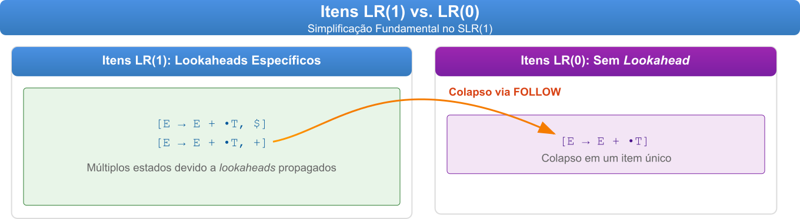

9 Parsers \(SLR(1)\): A Ponte Entre Simplicidade e Poder
Se Watson era nosso detetive \(LR(1)\), então o \(SLR(1)\) é o inspetor Lestrade, menos sofisticado, às vezes perde pistas sutis, mas muito mais rápido em chegar a uma conclusão e, frequentemente, é tudo que precisamos. O Simple \(LR(1)\), ou \(SLR(1)\), representa o primeiro passo histórico em direção aos parsers \(LR\) práticos, oferecendo um compromisso elegante entre simplicidade de implementação e poder de reconhecimento.
O parser \(SLR(1)\) nasceu da necessidade prática de simplificar a construção das tabelas \(LR(1)\). Desenvolvido por Frank DeRemer em 1969, apenas quatro anos após o trabalho de Knuth sobre \(LR(1)\), em sua tese de doutorado Practical Translators for LR(k) Languages, o \(SLR\) tornou viável a implementação de parsers bottom-up eficientes sem a explosão de estados que caracterizava o \(LR(1)\) canônico que vimos no capítulo Chapter 8.
A notação \(SLR(1)\) significa:
- \(S\): Simple (simples);
- \(L\): Left-to-Right scan (varredura da esquerda para a direita);
- \(R\): Rightmost derivation in reverse (derivação mais à direita em ordem reversa);
- \(1\): número de símbolos de lookahead.
A genialidade do \(SLR(1)\) está em sua observação fundamental: ao invés de propagar lookaheads específicos por meio dos itens, como faz o \(LR(1)\), podemos usar uma informação global sobre em que posição os não-terminais podem aparecer, os conjuntos \(FOLLOW\).
9.1 A Simplificação Fundamental: de Itens \(LR(1)\) para Itens \(LR(0)\)
A diferença mais importante entre \(SLR(1)\) e \(LR(1)\) está na estrutura dos itens. Enquanto o \(LR(1)\) usa itens da forma \([A \rightarrow \alpha \bullet \beta, a]\) com lookahead específico, o \(SLR(1)\) trabalha com itens \(LR(0)\) mais simples: \([A \rightarrow \alpha \bullet \beta]\), sem lookahead embutido.
Esta simplificação tem consequências profundas:
- Redução drástica de estados: gramáticas que geram centenas de estados \(LR(1)\) podem ter apenas dezenas de estados \(SLR(1)\);
- Construção mais simples: o algoritmo de construção é significativamente mais direto;
- Menor poder de reconhecimento: algumas gramáticas \(LR(1)\) geram conflitos no \(SLR(1)\).
Para ilustrar, considere dois itens que seriam distintos no \(LR(1)\), como apresentado na figura Figure 9.1:

Na Figura Figure 9.1, dois itens \(LR(1)\) com diferentes lookaheads se fundem em um único item \(LR(0)\) no \(SLR(1)\). Isso reduz a complexidade, mas pode introduzir conflitos.
9.2 O Papel dos Conjuntos \(FOLLOW\)
Se os itens \(LR(0)\) não carregam lookahead, como o parser decide quando reduzir? A resposta para esta questão pode ser encontrada nos conjuntos \(FOLLOW\). Para cada não-terminal \(A\) na gramática, \(FOLLOW(A)\) contém todos os terminais que podem aparecer imediatamente após \(A\) em alguma forma sentencial.
Como vimos antes no Capítulo Chapter 7, a construção do conjunto \(FOLLOW\) segue regras precisas:
- se \(S\) é o símbolo inicial, então \(\$ \in FOLLOW(S)\);
- se existe uma produção \(A \rightarrow \alpha B \beta\), então \(FIRST(\beta) - \{\epsilon\} \subseteq FOLLOW(B)\);
- se existe uma produção \(A \rightarrow \alpha B\) ou \(A \rightarrow \alpha B \beta\) onde \(\epsilon \in FIRST(\beta)\), então \(FOLLOW(A) \subseteq FOLLOW(B)\).
Esta informação global substitui a propagação local de lookaheads do \(LR(1)\), tornando a construção muito mais eficiente.
9.3 O Algoritmo de Construção \(SLR(1)\)
O processo de construção de um parser \(SLR(1)\) segue três fases distintas:
9.3.1 Fase 1: Preparação da Gramática
A primeira fase estabelece os fundamentos necessários para a construção do parser. Começamos aumentando a gramática original adicionando uma nova produção \(S' \rightarrow S\), onde \(S\) é o símbolo inicial original. Este aumento nos permite detectar a aceitação da entrada de forma inequívoca. Em seguida, calculamos os conjuntos \(FIRST\) para todos os símbolos da gramática, que nos informam quais terminais podem aparecer no início de qualquer sequência derivável de um símbolo. Por fim, para o \(SLR(1)\), calculamos os conjuntos \(FOLLOW\) para todos os não-terminais, que contêm os terminais que podem aparecer imediatamente após cada não-terminal em qualquer forma sentencial.
9.3.2 Fase 2: Construção da Coleção Canônica de Itens \(LR(0)\)
Esta fase constrói o autômato finito que reconhece os prefixos viáveis da gramática. Começamos com o estado inicial \(I_0\), que contém o closure do item \([S' \rightarrow \bullet S]\). A função \(CLOSURE\) expande um conjunto de itens adicionando todos os itens que podem ser alcançados quando encontramos um não-terminal imediatamente após o ponto. Para cada estado e cada símbolo gramatical, aplicamos a função \(GOTO\), que move o ponto sobre o símbolo e calcula o closure do resultado. Novos estados são adicionados à coleção até que nenhum novo estado seja descoberto. Note que, diferentemente do \(LR(1)\), trabalhamos apenas com itens \(LR(0)\) sem lookahead embutido, o que resulta em significativamente menos estados.
9.3.3 Fase 3: Construção das Tabelas ACTION e GOTO
A fase final transforma o autômato de itens \(LR(0)\) nas tabelas de parsing. Para cada estado, examinamos seus itens: se um item tem a forma \([A \rightarrow \alpha \bullet t\beta]\) onde \(t\) é terminal, geramos uma ação de shift; se um item tem a forma \([A \rightarrow \alpha \bullet]\) (ponto no final), geramos ações de reduce para todos os terminais em \(FOLLOW(A)\) - esta é a diferença fundamental do \(SLR(1)\) em relação ao \(LR(1)\), usando informação global ao invés de lookaheads específicos; o item especial \([S' \rightarrow S\bullet]\) gera a ação de aceitação. A tabela \(GOTO\) é preenchida para não-terminais, indicando para qual estado transitar após uma redução. Esta abordagem pode gerar conflitos em gramáticas que seriam \(LR(1)\) mas não \(SLR(1)\); os conjuntos \(FOLLOW\) são uma aproximação conservadora dos lookaheads verdadeiramente necessários.
9.3.4 Pseudocódigo do Algoritmo \(SLR(1)\)
As regras de criação de parsers \(SLR(1)\) podem ser formalizadas no seguinte pseudocódigo:
ALGORITMO CONSTRUIR_PARSER_SLR1(G)
// ENTRADA: Uma gramática G
// SAÍDA: As tabelas de parsing $SLR(1)$ ACTION e GOTO
// Fase 1: Preparação
1. Aumentar a gramática: adicionar S' → S
2. Calcular conjuntos FIRST para todos os símbolos
3. Calcular conjuntos FOLLOW para todos os não-terminais
// Fase 2: Construção da Coleção Canônica de Itens LR(0)
4. Inicializar C = {}
5. I₀ = CLOSURE({[S' → •S]}) // Note: sem _lookahead_!
6. Adicionar I₀ a C
7. Marcar I₀ como "não processado"
8. ENQUANTO houver um conjunto I em C marcado como "não processado":
9. Marcar I como "processado"
10. PARA CADA símbolo gramatical X:
11. J = GOTO(I, X)
12. SE J não for vazio E J não estiver em C:
13. Adicionar J a C
14. Marcar J como "não processado"
15. FIM SE
16. FIM PARA
17. FIM ENQUANTO
// Fase 3: Construção das Tabelas ACTION e GOTO
18. PARA CADA estado i em C:
19. PARA CADA item em I_i:
20. // Caso 1: Item de _shift_
21. SE o item tem a forma [A → α•tβ], onde t é TERMINAL:
22. J = GOTO(I_i, t)
23. ACTION[i, t] = "_shift_ j", onde I_j = J
24. FIM SE
25. // Caso 2: Item de Reduce (aqui está a diferença mais importante!)
26. SE o item tem a forma [A → α•] E A ≠ S':
27. PARA CADA terminal a em FOLLOW(A): // Usa FOLLOW!
28. ACTION[i, a] = "reduce k", onde k é o número da produção
29. FIM PARA
30. FIM SE
31. // Caso 3: Aceitação
32. SE o item é [S' → S•]:
33. ACTION[i, $] = "accept"
34. FIM SE
35. FIM PARA
36. // Tabela GOTO para não-terminais
37. PARA CADA não-terminal B:
38. SE GOTO(I_i, B) = I_j E j ≠ vazio:
39. GOTO[i, B] = j
40. FIM SE
41. FIM PARA
42. FIM PARA
// Funções Auxiliares
43. FUNÇÃO CLOSURE(I): // Versão LR(0) - mais simples!
44. J = I
45. REPETIR
46. PARA CADA item [A → α•Bβ] em J:
47. PARA CADA produção B → γ:
48. Adicionar [B → •γ] a J // Sem _lookahead_!
49. FIM PARA
50. FIM PARA
51. ATÉ que nenhum novo item seja adicionado
52. RETORNAR J
53. FUNÇÃO GOTO(I, X):
54. J = {}
55. PARA CADA item [A → α•Xβ] em I:
56. Adicionar [A → αX•β] a J
57. FIM PARA
58. RETORNAR CLOSURE(J)9.4 Exemplo Guiado: Construindo um Parser \(SLR(1)\) Completo
Para que a esforçada leitora possa entender o processo de criação de parsers \(SLR(1)\), vamos construir um parser \(SLR(1)\) para a mesma gramática usada no Capítulo Chapter 8; isso vai permitir que a leitora veja as diferenças e semelhanças entre os dois tipos de parser
E → E + n
E → n9.4.1 Passo 1: Gramática Aumentada e Conjuntos Preliminares
Primeiro, aumentamos a gramática:
0. E' → E
1. E → E + n
2. E → nAgora calculamos os conjuntos necessários:
Conjuntos \(FIRST\): são muito simples nesta gramática:
- \(FIRST(E) = \{n\}\);
- \(FIRST(E') = \{n\}\).
Conjuntos \(FOLLOW\): para calcular \(FOLLOW\), aplicamos as regras de criação do conjunto \(FOLLOW\) sistematicamente:
- \(E'\) é o símbolo inicial, então \(\$ \in FOLLOW(E')\);
- da produção \(E' \rightarrow E\): como não há nada após \(E\), \(FOLLOW(E') \subseteq FOLLOW(E)\), logo \(\$ \in FOLLOW(E)\);
- da produção \(E \rightarrow E + n\): o símbolo \(+\) aparece após \(E\), então \(+ \in FOLLOW(E)\).
Resultado:
- \(FOLLOW(E') = \{\$\}\);
- \(FOLLOW(E) = \{\$, +\}\).
9.4.2 Passo 2: Construção dos Estados \(LR(0)\)
Estado \(I_0\) (Estado Inicial): começamos com o núcleo \(\{[E' \rightarrow \bullet E]\}\) e aplicamos CLOSURE:
Núcleo: [E' → •E]
Aplicando CLOSURE:
- E está após •, então adicionamos produções de E:
[E → •E + n]
[E → •n]
Estado I₀ completo:
[E' → •E]
[E → •E + n]
[E → •n]A atenta leitora deve notar a diferença fundamental: no \(LR(1)\), teríamos múltiplas versões desses itens com diferentes lookaheads. No \(SLR(1)\), cada item aparece apenas uma vez.
Calculando as Transições:
\(GOTO(I_0, E) = I_1\):
Movendo • sobre E nos itens relevantes:
[E' → E•]
[E → E• + n]
Estado I₁:
[E' → E•]
[E → E• + n]\(GOTO(I_0, n) = I_2\):
Movendo • sobre n:
[E → n•]
Estado I₂:
[E → n•]\(GOTO(I_1, +) = I_3\):
Movendo • sobre +:
[E → E + •n]
Estado I₃:
[E → E + •n]\(GOTO(I_3, n) = I_4\):
Movendo • sobre n:
[E → E + n•]
Estado $I_4$:
[E → E + n•]9.4.3 Passo 3: Comparação com \(LR(1)\)
A diferença é digna de nota. No \(LR(1)\) canônico, o estado \(I_0\) continha \(5\) itens devido aos diferentes lookaheads. No \(SLR(1)\), temos apenas \(3\). Esta economia se propaga por todos os estados:
| Parser | Estados Totais | Itens em \(I_0\) |
|---|---|---|
| \(LR(1)\) | 5 | 5 |
| \(SLR(1)\) | 5 | 3 |
Neste exemplo simples, o número de estados coincidiu, mas em gramáticas maiores, a diferença pode ser dramática. Um exemplo mais complexo, que exploraremos a seguir, deixará essa diferença mais evidente.
9.4.4 Passo 4: Construção da Tabela ACTION/GOTO
Agora construímos a tabela usando os conjuntos \(FOLLOW\):
Estado 0 (\(I_0\)):
- \([E \rightarrow \bullet n]\) com • antes de \(n\) (terminal) → \(ACTION[0, n] = s2\);
- \(GOTO(I_0, E) = I_1\) → \(GOTO[0, E] = 1\).
Estado 1 (\(I_1\)):
- \([E' \rightarrow E\bullet]\) é item de aceitação → \(ACTION[1, \$] = acc\);
- \([E \rightarrow E\bullet + n]\) com • antes de \(+\) → \(ACTION[1, +] = s3\).
Estado 2 (\(I_2\)):
- \([E \rightarrow n\bullet]\) é item de redução;
- Usamos \(FOLLOW(E) = \{\$, +\}\);
- → \(ACTION[2, \$] = r2\) e \(ACTION[2, +] = r2\).
Estado 3 (\(I_3\)):
- \([E \rightarrow E + \bullet n]\) com • antes de \(n\) → \(ACTION[3, n] = s4\).
Estado 4 (\(I_4\)):
- \([E \rightarrow E + n\bullet]\) é item de redução;
- Usamos \(FOLLOW(E) = \{\$, +\}\);
- → \(ACTION[4, \$] = r1\) e \(ACTION[4, +] = r1\).
9.4.5 Tabela Final \(SLR(1)\)
| Estado | ACTION | GOTO | ||
|---|---|---|---|---|
| n | + | $ | E | |
| 0 | s2 | 1 | ||
| 1 | s3 | acc | ||
| 2 | r2 | r2 | ||
| 3 | s4 | |||
| 4 | r1 | r1 |
Observação: a tabela resultante é idêntica à tabela \(LR(1)\) para esta gramática! Isso ocorre porque esta gramática simples é \(SLR(1)\). A diferença aparece quando a gramática tem sutilezas que o \(SLR(1)\) não consegue capturar.
9.5 Implementação em Python
from typing import Set, Dict, List, Tuple, Optional
from dataclasses import dataclass, field
from collections import defaultdict
@dataclass(frozen=True)
class LR0Item:
"""Item LR(0): [A → α•β]"""
lhs: str
before_dot: tuple
after_dot: tuple
def __str__(self):
before = ' '.join(self.before_dot) if self.before_dot else ''
after = ' '.join(self.after_dot) if self.after_dot else ''
return f"[{self.lhs} → {before}•{after}]"
@dataclass
class Production:
"""Produção da gramática"""
lhs: str
rhs: tuple
class SLR1Parser:
def __init__(self):
self.grammar = {}
self.terminals = set()
self.nonterminals = set()
self.start_symbol = None
self.original_start = None
self.productions = []
self.first_sets = {}
self.follow_sets = {}
self.states = []
self.action_table = {}
self.goto_table = {}
def add_production(self, lhs: str, rhs: List[str]):
"""Adiciona uma produção à gramática"""
if lhs not in self.grammar:
self.grammar[lhs] = []
rhs_tuple = tuple(rhs)
self.grammar[lhs].append(rhs_tuple)
self.productions.append(Production(lhs, rhs_tuple))
self.nonterminals.add(lhs)
for symbol in rhs:
if symbol not in self.grammar and symbol != 'ε':
self.terminals.add(symbol)
if not self.start_symbol:
self.start_symbol = lhs
self.original_start = lhs
def augment_grammar(self):
"""Aumenta a gramática com S' → S"""
new_start = self.original_start + "'"
self.add_production(new_start, [self.original_start])
self.start_symbol = new_start
def compute_first(self):
"""Calcula conjuntos FIRST"""
self.first_sets = {nt: set() for nt in self.nonterminals}
# Para terminais, FIRST é o próprio terminal
for t in self.terminals:
self.first_sets[t] = {t}
changed = True
while changed:
changed = False
for nt in self.nonterminals:
old_size = len(self.first_sets[nt])
for rhs in self.grammar.get(nt, []):
if not rhs or rhs == ('ε',):
self.first_sets[nt].add('ε')
continue
all_have_epsilon = True
for sym in rhs:
if sym in self.terminals:
self.first_sets[nt].add(sym)
all_have_epsilon = False
break
else:
self.first_sets[nt].update(
self.first_sets[sym] - {'ε'}
)
if 'ε' not in self.first_sets[sym]:
all_have_epsilon = False
break
if all_have_epsilon:
self.first_sets[nt].add('ε')
if len(self.first_sets[nt]) > old_size:
changed = True
def compute_follow(self):
"""Calcula conjuntos FOLLOW"""
self.follow_sets = {nt: set() for nt in self.nonterminals}
# $ está em FOLLOW do símbolo inicial
self.follow_sets[self.start_symbol].add('$')
changed = True
while changed:
changed = False
for nt in self.nonterminals:
for rhs in self.grammar.get(nt, []):
for i, symbol in enumerate(rhs):
if symbol in self.nonterminals:
old_size = len(self.follow_sets[symbol])
# Símbolos após o não-terminal
beta = rhs[i + 1:]
if beta:
# FIRST(β) - {ε} ⊆ FOLLOW(symbol)
first_beta = self.calculate_first_of_sequence(beta)
self.follow_sets[symbol].update(
first_beta - {'ε'}
)
# Se ε ∈ FIRST(β), então FOLLOW(nt) ⊆ FOLLOW(symbol)
if 'ε' in first_beta:
self.follow_sets[symbol].update(
self.follow_sets[nt]
)
else:
# symbol está no final: FOLLOW(nt) ⊆ FOLLOW(symbol)
self.follow_sets[symbol].update(
self.follow_sets[nt]
)
if len(self.follow_sets[symbol]) > old_size:
changed = True
def calculate_first_of_sequence(self, symbols: tuple) -> Set[str]:
"""Calcula FIRST de uma sequência de símbolos"""
if not symbols:
return {'ε'}
result = set()
for sym in symbols:
if sym in self.terminals:
result.add(sym)
break
else:
result.update(self.first_sets[sym] - {'ε'})
if 'ε' not in self.first_sets[sym]:
break
else:
result.add('ε')
return result
def closure(self, items: Set[LR0Item]) -> Set[LR0Item]:
"""Calcula CLOSURE de um conjunto de itens LR(0)"""
closure_set = set(items)
changed = True
while changed:
changed = False
new_items = set()
for item in closure_set:
if not item.after_dot:
continue
next_symbol = item.after_dot[0]
if next_symbol not in self.nonterminals:
continue
for production in self.grammar.get(next_symbol, []):
new_item = LR0Item(
lhs=next_symbol,
before_dot=(),
after_dot=production
)
if new_item not in closure_set:
new_items.add(new_item)
changed = True
closure_set.update(new_items)
return closure_set
def goto(self, items: Set[LR0Item], symbol: str) -> Set[LR0Item]:
"""Calcula GOTO(items, symbol)"""
goto_set = set()
for item in items:
if item.after_dot and item.after_dot[0] == symbol:
new_item = LR0Item(
lhs=item.lhs,
before_dot=item.before_dot + (symbol,),
after_dot=item.after_dot[1:]
)
goto_set.add(new_item)
if not goto_set:
return set()
return self.closure(goto_set)
def build_states(self):
"""Constrói a coleção canônica de conjuntos de itens LR(0)"""
self.compute_first()
self.compute_follow()
self.terminals.add('$')
# Estado inicial
augmented_prod = self.grammar[self.start_symbol][0]
start_item = LR0Item(
lhs=self.start_symbol,
before_dot=(),
after_dot=augmented_prod
)
initial_state = self.closure({start_item})
self.states = [initial_state]
# Constrói estados usando GOTO
i = 0
while i < len(self.states):
current_state = self.states[i]
# Símbolos possíveis após o ponto
symbols = set()
for item in current_state:
if item.after_dot:
symbols.add(item.after_dot[0])
for symbol in symbols:
new_state = self.goto(current_state, symbol)
if new_state and new_state not in self.states:
self.states.append(new_state)
i += 1
def build_parsing_table(self):
"""Constrói a tabela ACTION/GOTO usando SLR(1)"""
conflicts = []
for i, state in enumerate(self.states):
for item in state:
if item.after_dot:
# Item de _shift_: [A → α•aβ]
symbol = item.after_dot[0]
if symbol in self.terminals:
goto_state = self.goto(state, symbol)
if goto_state in self.states:
j = self.states.index(goto_state)
key = (i, symbol)
if key in self.action_table:
existing = self.action_table[key]
if existing[0] == 'reduce':
conflicts.append(
f"Conflito S/R em estado {i}, "
f"símbolo '{symbol}': preferindo _shift_"
)
self.action_table[key] = ('_shift_', j)
else:
self.action_table[key] = ('_shift_', j)
else:
# Item de reduce: [A → α•]
if (item.lhs == self.start_symbol and
item.before_dot == (self.original_start,)):
# Accept
key = (i, '$')
self.action_table[key] = ('accept', None)
else:
# Reduce usando FOLLOW
for prod_idx, prod in enumerate(self.productions):
if (prod.lhs == item.lhs and
prod.rhs == item.before_dot):
# Para cada símbolo em FOLLOW(A)
for symbol in self.follow_sets[item.lhs]:
key = (i, symbol)
action = ('reduce', prod_idx)
if key in self.action_table:
existing = self.action_table[key]
if existing[0] == '_shift_':
conflicts.append(
f"Conflito S/R em estado {i}, "
f"símbolo '{symbol}': mantendo _shift_"
)
continue
elif existing[0] == 'reduce':
if existing != action:
conflicts.append(
f"Conflito R/R em estado {i}, "
f"símbolo '{symbol}'"
)
continue
self.action_table[key] = action
break
# Preenche GOTO para não-terminais
for i, state in enumerate(self.states):
for symbol in self.nonterminals:
goto_state = self.goto(state, symbol)
if goto_state in self.states:
j = self.states.index(goto_state)
self.goto_table[(i, symbol)] = j
return conflicts
def print_states(self):
"""Imprime os estados do autômato"""
for i, state in enumerate(self.states):
print(f"\nEstado I{i}:")
for item in sorted(state, key=lambda x: str(x)):
print(f" {item}")
def print_follow_sets(self):
"""Imprime os conjuntos FOLLOW"""
print("\nConjuntos FOLLOW:")
for nt in sorted(self.nonterminals):
symbols = sorted(self.follow_sets[nt])
print(f" FOLLOW({nt}) = {{{', '.join(symbols)}}}")
def parse(self, input_tokens: List[str]) -> bool:
"""Analisa uma string usando a tabela SLR(1)"""
stack = [0]
input_tokens = input_tokens.copy()
input_tokens.append('$')
i = 0
print(f"{'Passo':<6} {'Pilha':<20} {'Entrada':<15} {'Ação':<30}")
print("-" * 75)
step = 1
while True:
state = stack[-1]
token = input_tokens[i]
action = self.action_table.get((state, token))
if action is None:
print(f"Erro: sem ação para estado {state} e token '{token}'")
return False
stack_str = str(stack)
input_str = ' '.join(input_tokens[i:])
if action[0] == '_shift_':
action_str = f"_shift_ para estado {action[1]}"
print(f"{step:<6} {stack_str:<20} {input_str:<15} {action_str:<30}")
stack.append(action[1])
i += 1
elif action[0] == 'reduce':
prod_idx = action[1]
prod = self.productions[prod_idx]
rhs_str = ' '.join(prod.rhs) if prod.rhs else 'ε'
prod_str = f"{prod.lhs} → {rhs_str}"
action_str = f"reduce por {prod_str}"
print(f"{step:<6} {stack_str:<20} {input_str:<15} {action_str:<30}")
# Remove estados da pilha
for _ in range(len(prod.rhs)):
if stack:
stack.pop()
# Consulta GOTO
goto_state = self.goto_table.get((stack[-1], prod.lhs))
if goto_state is None:
print(f"Erro: sem GOTO para estado {stack[-1]} e símbolo {prod.lhs}")
return False
stack.append(goto_state)
elif action[0] == 'accept':
print(f"{step:<6} {stack_str:<20} {input_str:<15} {'Accept!':<30}")
return True
step += 1
if step > 100:
print("Limite de passos excedido")
return False
return False
# Exemplo de uso
if __name__ == "__main__":
parser = SLR1Parser()
# Define a gramática E → E + n | n
parser.add_production('E', ['E', '+', 'n'])
parser.add_production('E', ['n'])
# Aumenta a gramática
parser.augment_grammar()
# Constrói o parser
print("Construindo estados do autômato SLR(1)...")
parser.build_states()
print(f"Estados construídos: {len(parser.states)}")
# Imprime os estados
parser.print_states()
# Imprime conjuntos FOLLOW
parser.print_follow_sets()
# Constrói a tabela
print("\nConstruindo tabela ACTION/GOTO...")
conflicts = parser.build_parsing_table()
if conflicts:
print(f"\nConflitos encontrados: {len(conflicts)}")
for conflict in conflicts:
print(f" - {conflict}")
else:
print("\nNenhum conflito encontrado.")
# Mostra as produções
print("\nProduções da gramática aumentada:")
for idx, prod in enumerate(parser.productions):
rhs_str = ' '.join(prod.rhs) if prod.rhs else 'ε'
print(f" {idx}: {prod.lhs} → {rhs_str}")
# Testa o parser
print("\n" + "="*75)
print("Analisando 'n + n':")
print("="*75)
result = parser.parse(['n', '+', 'n'])
print(f"\nResultado: {'Aceito' if result else 'Rejeitado'}")
print("\n" + "="*75)
print("Analisando 'n + n + n':")
print("="*75)
result = parser.parse(['n', '+', 'n', '+', 'n'])
print(f"\nResultado: {'Aceito' if result else 'Rejeitado'}")9.6 Um Estudo de Caso: Uma Gramática \(LR(1)\) Não-\(SLR(1)\)
Para entender as limitações do \(SLR(1)\) e a necessidade de métodos mais potentes como o \(LR(1)\), vamos analisar uma gramática que é um exemplo clássico de ser \(LR(1)\), mas não \(SLR(1)\). Ela foi projetada para criar um cenário em que a informação global dos conjuntos \(FOLLOW\) é insuficiente, mas a informação local dos lookaheads do \(LR(1)\) é precisa o bastante para resolver a ambiguidade.
S → a A d
S → b B d
S → a B e
S → b A e
A → c
B → cEsta gramática descreve uma linguagem simples com quatro sentenças possíveis: acd, bcd, abe e bae. O problema para o parser surge após ler o terminal c, pois, nesse momento, ele não sabe se esse c veio de um não-terminal A ou B. A decisão de qual produção usar para a redução (A → c ou B → c) dependerá do contexto que o \(SLR(1)\) não consegue enxergar.
9.6.1 Preparação: Gramática Aumentada e Conjuntos Preliminares
Primeiro, aumentamos a gramática e numeramos as produções:
0. S' → S
1. S → a A d
2. S → b B d
3. S → a B e
4. S → b A e
5. A → c
6. B → c9.6.1.1 Conjuntos \(FIRST\)
Os conjuntos \(FIRST\) são diretos de calcular:
- \(FIRST(S) = \{a, b\}\)
- \(FIRST(A) = \{c\}\)
- \(FIRST(B) = \{c\}\)
9.6.1.2 Conjuntos \(FOLLOW\)
Aqui está o ponto central do problema para o \(SLR(1)\). Vamos calcular os conjuntos \(FOLLOW\):
- \(S'\) é o símbolo inicial, então \(\$ \in FOLLOW(S')\) e, por consequência, \(\$ \in FOLLOW(S)\).
- Da produção
S → a A d, o terminaldsegueA, então \(d \in FOLLOW(A)\). - Da produção
S → b A e, o terminalesegueA, então \(e \in FOLLOW(A)\). - Da produção
S → b B d, o terminaldsegueB, então \(d \in FOLLOW(B)\). - Da produção
S → a B e, o terminalesegueB, então \(e \in FOLLOW(B)\).
Aplicando as regras, obtemos:
- \(FOLLOW(S) = \{\$\}\)
- \(FOLLOW(A) = \{d, e\}\)
- \(FOLLOW(B) = \{d, e\}\)
Note que \(FOLLOW(A)\) e \(FOLLOW(B)\) são idênticos. É esta sobreposição que o \(SLR(1)\) não conseguirá resolver.
9.6.2 Construção da Tabela \(SLR(1)\)
9.6.2.1 Estados do Autômato \(LR(0)\)
Vamos construir os estados mais relevantes para a análise.
Estado \(I_0\) (inicial):
CLOSURE({[S' → •S]}) =
[S' → •S]
[S → •a A d]
[S → •b B d]
[S → •a B e]
[S → •b A e]Estado \(I_1\): \(GOTO(I_0, a)\)
CLOSURE({[S → a•A d], [S → a•B e]}) =
[S → a•A d]
[S → a•B e]
[A → •c] // Adicionado pelo item 1
[B → •c] // Adicionado pelo item 2Estado \(I_2\): \(GOTO(I_0, b)\)
CLOSURE({[S → b•B d], [S → b•A e]}) =
[S → b•B d]
[S → b•A e]
[A → •c] // Adicionado pelo item 2
[B → •c] // Adicionado pelo item 1Estado \(I_6\): \(GOTO(I_1, c)\) ou \(GOTO(I_2, c)\)
CLOSURE({[A → c•], [B → c•]}) =
[A → c•]
[B → c•]Este estado, \(I_6\), é o estado problemático.
9.6.2.2 Tabela \(SLR(1)\) com Conflitos
Ao construir a tabela para o estado \(I_6\), encontramos um conflito.
- O item
[A → c•](produção 5) nos diz para reduzir. As ações de redução são inseridas para cada terminal no conjunto \(FOLLOW(A)\). Como \(FOLLOW(A) = \{d, e\}\), teríamos: - \(ACTION[6, d] = r5\)
- \(ACTION[6, e] = r5\)
- O item
[B → c•](produção 6) também nos diz para reduzir. As ações são inseridas para cada terminal em \(FOLLOW(B)\). Como \(FOLLOW(B) = \{d, e\}\), teríamos: - \(ACTION[6, d] = r6\)
- \(ACTION[6, e] = r6\)
CONFLITO REDUCE-REDUCE no Estado 6: para os terminais d e e, a tabela teria duas entradas:
- Na célula \(ACTION[6, d]\), temos um conflito entre
reduce 5ereduce 6. - Na célula \(ACTION[6, e]\), temos um conflito entre
reduce 5ereduce 6.
O parser \(SLR(1)\) não sabe se, ao ver um c, deve reduzi-lo para A ou para B. Ele usa a informação global de que tanto A quanto B podem ser seguidos por d ou e, gerando o conflito.
9.6.3 Construção da Tabela \(LR(1)\) Canônica
Agora, vamos ver como a propagação de lookaheads específicos do \(LR(1)\) resolve esse problema.
9.6.3.1 Estados do Autômato \(LR(1)\)
Estado \(I_0\) (inicial):
[S' → •S, $]
[S → •a A d, $]
[S → •b B d, $]
[S → •a B e, $]
[S → •b A e, $]Estado \(I_1\): \(GOTO(I_0, a)\)
Núcleo:
{[S → a•A d, $], [S → a•B e, $]}Aplicando
CLOSURE:Do item
[S → a•A d, $], o símbolo apósAéd. O lookahead para as produções deAserá \(FIRST(d\$) = \{d\}\). Adicionamos:[A → •c, d].Do item
[S → a•B e, $], o símbolo apósBée. O lookahead para as produções deBserá \(FIRST(e\$) = \{e\}\). Adicionamos:[B → •c, e].Estado \(I_1\) completo:
[S → a•A d, $]
[S → a•B e, $]
[A → •c, d]
[B → •c, e]Estado \(I_2\): \(GOTO(I_0, b)\)
- Seguindo a mesma lógica:
[S → b•B d, $]
[S → b•A e, $]
[B → •c, d]
[A → •c, e]Agora, observe o que acontece quando fazemos a transição com c. Criamos dois estados distintos, onde o \(SLR(1)\) criava apenas um.
Estado \(I_6\): \(GOTO(I_1, c)\)
[A → c•, d]
[B → c•, e]Neste estado, que alcançamos após ver um a e depois um c, as ações são:
- Se o próximo símbolo for
d, a única ação possível éreduce 5(A → c), pois o lookahead do item éd. - Se o próximo símbolo for
e, a única ação possível éreduce 6(B → c), pois o lookahead do item ée.
Não há conflito!
Estado \(I_9\): \(GOTO(I_2, c)\)
[B → c•, d]
[A → c•, e]Neste estado, que alcançamos após ver um b e depois um c, as ações são:
- Se o próximo símbolo for
d, a única ação possível éreduce 6(B → c). - Se o próximo símbolo for
e, a única ação possível éreduce 5(A → c). Não há conflito!
9.6.4 Tabela Final \(LR(1)\)
| Estado | ACTION | GOTO | |||||||
|---|---|---|---|---|---|---|---|---|---|
| a | b | c | d | e | $ | S | A | B | |
| 0 | s1 | s2 | 3 | ||||||
| 1 | s6 | 4 | 5 | ||||||
| 2 | s9 | 8 | 7 | ||||||
| 3 | acc | ||||||||
| 4 | s10 | ||||||||
| 5 | s11 | ||||||||
| 6 | r5 | r6 | |||||||
| 7 | s12 | ||||||||
| 8 | s13 | ||||||||
| 9 | r6 | r5 | |||||||
| 10 | r1 | ||||||||
| 11 | r3 | ||||||||
| 12 | r2 | ||||||||
| 13 | r4 |
9.6.5 Por Que o Conflito Ocorre no \(SLR(1)\)
Problema do \(SLR(1)\): O parser chega ao estado \(I_6\) (LR(0)) após ler
c. Para decidir a redução, ele consulta os conjuntos \(FOLLOW(A)\) e \(FOLLOW(B)\). Como ambos contêm{d, e}, ele não consegue decidir entre reduzir paraAou paraB.Solução do \(LR(1)\): O parser \(LR(1)\) sabe muito mais.
- Se ele chegou ao estado \(I_6\) (LR(1)), ele sabe que veio da sequência
ac. Neste contexto, ocdeve ser seguido pordpara formarA(acd) ou porepara formarB(abe). Os lookaheadsdeesão específicos para cada redução e não se sobrepõem. - Se ele chegou ao estado \(I_9\) (LR(1)), ele sabe que veio da sequência
bc. O raciocínio é análogo.
A precisão do \(LR(1)\) ao propagar os lookaheads permite que ele divida o que era um único estado conflituoso no \(SLR(1)\) em múltiplos estados não conflituosos, cada um representando um contexto de análise distinto.## Vantagens e Limitações do \(SLR(1)\)
9.6.6 Vantagens
- Simplicidade de Implementação: o algoritmo é direto e eficiente;
- Tabelas Compactas: significativamente menores que \(LR(1)\);
- Eficiência de Construção: tempo \(O(n^2)\) vs \(O(n^3)\) do \(LR(1)\);
- Suficiente para Muitas Linguagens: funciona bem para gramáticas de linguagens de programação simples.
9.6.7 Limitações
- Poder de Reconhecimento Limitado: nem toda gramática \(LR(1)\) é \(SLR(1)\);
- Conflitos Espúrios: o uso de \(FOLLOW\) pode gerar conflitos desnecessários;
- Inadequado para Gramáticas Complexas: linguagens modernas frequentemente excedem suas capacidades.
9.7 O Lugar do \(SLR(1)\) na Hierarquia
O \(SLR(1)\) ocupa uma posição intermediária na hierarquia dos parsers:
\[LL(1) \subset $SLR(1)$ \subset LALR(1) \subset $LR(1)\]$
Onde:
- \(LL(1)\): parsers preditivos top-down;
- \(SLR(1)\): Simple LR com conjuntos \(FOLLOW\);
- \(LALR(1)\): Look-Ahead LR, combina estados \(LR(1)\) similares;
- \(LR(1)\): canônico, máximo poder determinístico.
9.8 Exercícios
9.8.1 Exercício 1: Gramática com Conflito Potencial
Considere a gramática:
S → A a | b
A → c | ε- Aumente a gramática e calcule os conjuntos \(FIRST\) e \(FOLLOW\);
- Construa os estados \(LR(0)\) do autômato;
- Construa a tabela \(SLR(1)\) e identifique possíveis conflitos;
- Analise se esta gramática é \(SLR(1)\).
Dica: Preste atenção especial ao conjunto \(FOLLOW(A)\) e como ele afeta as ações de redução.
9.8.2 Exercício 2: Implementação de Gramática de Declarações
Implemente um parser \(SLR(1)\) para:
DECL → TYPE VARS ;
TYPE → int | float
VARS → VARS , id | id- Construa a coleção canônica de conjuntos de itens \(LR(0)\);
- Calcule os conjuntos \(FOLLOW\) necessários;
- Implemente o parser usando o código fornecido como base;
- Teste com as strings:
int x ;,float x , y , z ;
Observação: Esta gramática é perfeitamente \(SLR(1)\) e não deve gerar conflitos.